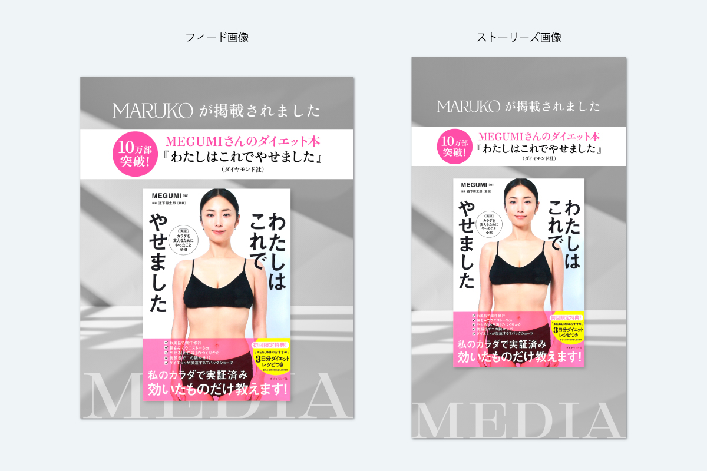
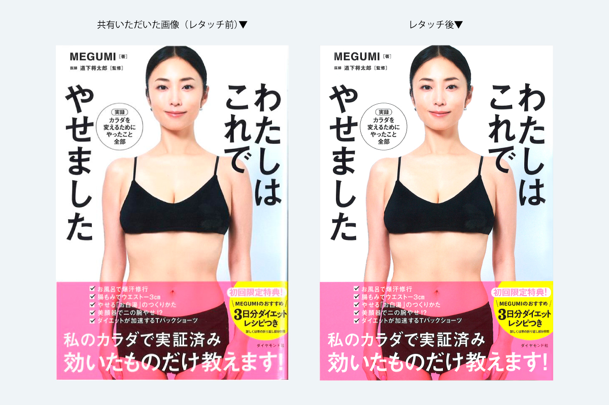

メディア情報 MEGUMIさんダイエット本


Instagram投稿
| 制作期間 | 2026年6月 |
| 制作時間 | 約2時間 |
| 依頼元 | MARUKO |
| 媒体 | SNS |
| 使用アプリ | Illustrator、Photoshop |
制作背景・意図
リブランディング後のInstagramへのメディア情報掲載の為に制作。MEGUMIさんの書籍の画像を共有いただきましたが、端が陰っていたり、帯の部分がかすれていたり劣化が見られたのでレタッチ修正を施しました。
リブランディング後のナチュラルな光が差し込む背景素材を使用し、書影とのコントラストを考えて設定。帯と同じピンクのサークルで「10万部突破!」を目立つようにレイアウトしました。